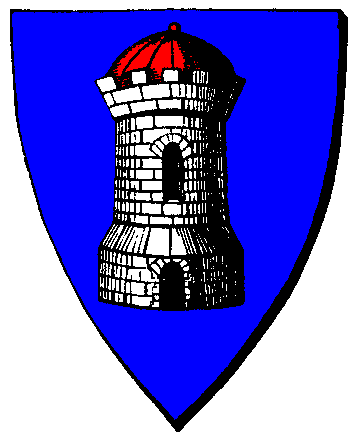

| Übersicht,
Off-Topic |
|
Herzlichen Glücnwunsch Titania (587  ) )
|
Rejäl
 |
Keine Ahnung, ob und wer da Multis nutzt. Wenn es so ist - sperren und wenn nicht belehrbar ausschliessen.
Den Mitschnitt habe ich auch nicht gehört. Interessiert mich auch nicht weiter.
Aber was mir so langsam noch mehr auf den Sack geht, als die Machtpolitik des Hains und den Ellenbogeneinsatz macher Hainspieler ist das eintönige, einfalltslose geplappere der Gegenfraktion, die die gleichen Fakten immer und immer wieder bei jeder Gelegenheit wiederkäut.
Dem ersten kann man noch ganz gut aus dem Weg gehen, dem zweiten leider nicht.
Gerade mit Titania liess sich da beispielsweise eine seitens von Hainspielern unschön angefangene Aktion ziemlich schnell entschärfen, während die Gegenfraktion aus dem Schlammschleudern gar nicht mehr raus gekommen ist.
|
13.05.10 17:39
 |
|
Rejäl
|
... und Nein, ich bin kein Freund des Hains - überhaupt nicht. Aber so schwarz und weiß und einfach ist die Welt leider nicht.
* sich ebenfalls Kutte umwirft und neben Fabius stellt * ... Fabius, aber wenn wir uns mal IG treffen, ... dein Flos ist schon gezimmert. |
13.05.10 17:43
|
|
Fabius Alagos
 |
Seemann die Haie werden weinen, so wenig wird von Dir für sie übrig sein!
:P |
13.05.10 17:54
|
|
Galaton Dragus
 |
Es gibt Wichtigeres! Fällt denn gar keinem der Rechtschreibfehler in der Überschrift auf? Sowas gehört auch bestraft! |
13.05.10 18:54
|
|
nandu
 |
was ist denn mit der umebennung von webtales in webtails? ist auch nciht gerade nett... *duck&renn* |
13.05.10 20:25
|
|
| Glorfindel von Gondolin (RIP) |
Muss sowas? |
13.05.10 20:38
|
|
| Pelgrin (RIP) |
ist schon schlimm, dass die meisten ihren Text vor dem absenden nicht noch mal überprüfen (stimmts nandu? :-P
aber man muss bei längeren Texten auch sagen, dass es hier im Forum mit dem kleinen Nachrichtenfeld nicht gerade schön ist etwas mehr ordentlich schreiben zu können .... da ist das Überprüfen auch sehr anstrengend.
Die Forumsoftware hier ist ja echt uralt und nicht im geringsten zeitgemäß |
13.05.10 20:39
|
|
Kittin Silberfang
 |
Wer hat denn nun wirklich Geburtstag oder ähnliches? *fg* |
14.05.10 9:10
|
|
Parion Theredith
 |
Keine Ahnung dabei hab ich extra einen Kuchen gebacken.
Muss ich ihn halt alleine essen. |
14.05.10 9:20
|
|
| Deirdre B. McMulenberc (RIP) |
schadet nicht... an dir ist ja eh nichts dran *duck und renn* |
14.05.10 9:32
|
|
| Celebrimbor (RIP) |
Einfach keine Wahlen in den gesperrten Städten zulassen. Und gaaaaanz fix gibt es weniger Multis (bei Topspielern) oder mehr freie Städte. |
14.05.10 13:34
|
|
| Glorfindel von Gondolin (RIP) |
Kuchen? Hat hier irgenwer Kuchen gesagt? |
15.05.10 8:36
|
|
| Magicus von Gondolin (RIP) |
*Glor wegzerr*
Nein, nur Kaffee! Der Kuchen ist verseucht ;-) |
15.05.10 10:15
|
|
Grace
 |
So , nun habe ich mir diesen ganzen Anschlag auch mal angetan , weiß jetzt zwar nicht , warum das ALLES mit den letzten Kommentaren ins lächerliche gezogen wurde ..
Ich fands sehr interessant , erinnerte mich an einige nette Spieler , welche schon vor Jahren freiwillig aus dem Spiel gegangen - weil ihnen dieses ganze cheaten auf den Nerv gegangen und das war auch schade.
Hauptsache die Kranken (sorry - scheint aber so)bleiben zurück und machen den Rest auch noch kaputt oder verderben den Letzten auch noch das Spiel .
Regt mich zwar nicht mehr sonderlich auf , weil man sich in gewisser Weise bereits daran gewöhnt bzw vermutet hat .
Aber wir zahlen alle Geld fürs Spiel und da waere es nützlich , wenn auch alle fair spielen könnten .
Gruß |
16.05.10 20:14
|
|
| Shayarîel Alcárin (RIP) |
Ebenso wie vermutlich viele andere habe ich zunächst einmal den Anschlag auf mich wirken lassen, ebenso wie dieses mp3-file. Und wie so viele andere auch habe ich erst einmal überlegt, ob ich hier in nur irgendeiner Art und Weise meine Meinung kund tue. Schließlich ist man ja meistens nicht allein von Auswirkungen betroffen, wenn man letzten Endes nicht die Meinung vertritt, die die vermutlich stärkste Spielergruppe hier von sich gibt. Aber dennoch denke ich, dass man nicht schweigen sollte.
Zunächst einmal möchte ich zu Tharsonius Beitrag sagen, dass er so in dieser Art vielleicht nicht notwendig gewesen wäre. Etwas weniger Sarkasmus und Ironie hätten in der Öffentlichkeit vermutlich mehr Wirkung gezeigt. Aber ich gebe zu, ich habe schwer schmunzeln müssen. Und vielleicht schwang sogar Schadenfreude mit, zugegeben. Zumal ich denke, dass das Wissen, um das Wie und Warum schon nicht unwichtig ist, da totschweigen leider erst recht fatal gewesen wäre.
Mir ist es letzten Endes auch egal weswegen Titania gesperrt wurde, ob wegen Multis oder sgriptusing, total Banane. Wer bescheißt, gehört bestraft. Das ist in einem Spiel nicht anders wie im echten Leben. Was ich dann jedoch fast schon wieder belustigend finde ist die Tatsache, dass Titania in diesem File bombenfest behauptet nichts getan zu haben, im gleichen Atemzug aber Falster derart konsequent dabei ist, zu behaupten, dass man Titania nichts nachweisen könne, das sei technisch gar nicht möglich. Und dass er sogar noch jedem, der es wissen will auf Nachfrage erklären will, warum.
Sorry, aber wer keine Multis/sgripts nutzt, dem MUSS man nicht erklären wieso ihm nichts nachzuweisen ist, denn dann genügt ein einziges Nein, ich habe/er hat nichts getan.
Zu behaupten, die SL handle aus reiner Willkür, ist ebenfalls total armselig. Es werden weder Drachen-Nester aus reiner Boshaftigkeit händisch in den Hain gesetzt, noch einfach so Leute aus purer Abneigung gesperrt (behaupte ich jetzt einfach mal so, denn sonst könnte ich mich auch darüber beschweren, dass wir über die letzten Jahre hinweg, seit es Karamonster in diesem Ausmaß gibt, auf der Steppe offensichtlich auch mega unbeliebt bei der SL waren).
Ich muss gestehen, die Art und Weise von Falsters totalitärer Ansprache überraschte mich nicht wirklich, denn ein Bündnis dieser Art zusammenzuhalten, bedarf es nun einmal eines sagen wir mal Diktators, der die Zügel fest im Griff hält, was ich dann jedoch echt absolut widerwärtig fand, war die Tatsache, dass man nun nach der sogenannten Reformation des Urvan-Konventes nun IG auf andere Spielergruppen KEINE Rücksicht mehr nehme.
Ahja, ihr wollt also durch Kündigung eurer Abos, die SL dazu zwingen, nach eurem Willen zu agieren, ihr wollt andere Spieler fertig machen, wenn sie auch nur wagen den Mund aufzumachen, freie Meinungsäußerung war gestern (gut in einem Fantasyspiel gibt es in den seltensten Fällen Demokratie und auch die Realität ist nun mal IG kaum von Interesse, aber es geht hier ja weniger um RP als um pures Machtstreben..). Dass IHR damit anderen Spielern den Spielspaß nehmt, vergesst ihr dabei vollkommen. Aber gut, vielleicht findet ihr das ja toll, wenn ihr eines Tages ohne Gegner, ohne andersdenkende Mitspieler alleine euer Spieleleben auf der Scherbe fristet. Bits und Bytes unter totalitärer Macht und Kontrolle von einigen durchgeknallten Leuten.
Ich bin kein Haingegner, denn ich denke, es gibt auch einige unter diesen Spielern, die ich durchaus mag, aber nach dieser Ansprache bin ich ernsthaft erschrocken, über die Art und Weise wie man sich derart massiv seine eigene Welt zusammenschustert, in der es nur die eigene Wahrheit gibt.
Irgendeiner sagte, er habe keine Lust mehr auf ein Spiel, in der die SL die Regeln vorgibt, nach denen er spielen muss. Darüber kann ich herzlich lachen. Denn das ist ein Spiel, das nun einmal von den Besitzern geleitet wird, wer sich nicht an die Regeln hält, schade, aber dann soll er gehen (und damit meine ich sicher nicht nur Hainler, um das klarzustellen). Das ist wie im richtigen Leben: Hält man sich nicht an die Gesetze, wird man gegebenenfalls ins Gefängnis gesteckt. In einem Spiel müsste man konsequent verhindern, dass ein Wiederholungtäter eben ausgeschlossen wird.
Ach ja, und wer denkt, er könne jetzt mit dem Argument kommen, das machen andere auch so
Springt ihr auch alle von der Klippe, weil es andere tun?
So, das wars erst mal von mir.
|
17.05.10 9:26
|
|
| Shayarîel Alcárin (RIP) |
Korrigiere : "In einem Spiel müsste man konsequent verhindern, dass ein Wiederholungtäter eben ausgeschlossen wird"
Soll heißen, müsste man verhindern, dass er wieder spielen darf. |
17.05.10 9:32
|
|
| Deirdre B. McMulenberc (RIP) |
Shayarîel, ich kann dir vorbehaltlos zustimmen :) hut ab vor dieser sachlichen zusammenfassung :) |
17.05.10 10:42
|
|
| Shayarîel Alcárin (RIP) |
Soeben hat mich eine Diplo erreicht, die ich gerne öffentlich beantworten würde.
Mir wurde nämlich gesagt, das was ich behaupte/abtue wäre schlichtweg falsch, da passiert.
Natürlich kann auch ich nicht in den Kopf der SL schauen und sagen, nee, stimmt nicht was ihr sagt. Mag sein, dass ich wirklich irre. Aber, und das was für mich zählt, gilt für jeden anderen auch. Ihr könnt da nicht hinein schauen. Es sind Vermutungen, die letzten Endes auf Hetze hinauslaufen.
Aber mal ganz ehrlich,warum sollte die Spielleitung jemanden sperren, der zu viel Macht hat und den ganz einfach nicht mag?
Letzlich kann der SL es piepegal sein, wer viel Macht hat und wer sozusagen das Spielgeschehen beherrscht. Was ihr aber nicht egal sein kann, ist, mit welchen Mitteln es gemacht wird. Und ich lehne mich da vermutlich sehr aus dem Fenster, wenn ich wage zu behaupten, dass die Gründe nicht aus der Luft gegriffen sind.
Wenn ich im Übrigen Jemanden lange genug eintrichtere, dass grün aber blau ist, dann gibt es vermutlich irgendwann auch den ein oder anderen der mir das glaubt. Ich muss nur überzeugend genug sein. Schlussendlich ändert es aber nichts an der Tatsache, dass grün eben einfach grün ist.
|
17.05.10 12:37
|
|
| Deirdre B. McMulenberc (RIP) |
In Bezug auf die SL kann ich nur sagen: von dem her, was ich mitbekomme, mag die SL grundsätzlich niemanden, will allen nur den Spaß versauen und so weiter und so fort...
Das ist wohl wie mit der Politik: grundsätzlich immer böse, inkompetent und nie was gutes im Sinn...
wenn das stimmen würde, wieso existiert das spiel dann noch? ;) Sry, aber einige steigern sich in dieses "spiel" echt rein... *vote für 1-2 Wochen zwangspause* ;) |
17.05.10 12:45
|
|
Baldur McMulenberc
 |
In dem mp3-File reiht sich ein Freud´scher Versprecher an den nächsten. Mir ist es egal ob der Hain bzw. ein Teil seiner Spieler schon wieder beschissen hat, ich will garnet wissen, was hinter "Wirtschaftsgemeinschaften" und Fallis "Accounts" steckt, mir ist gleich, dass ich als Spackenaccount bezeichnet werd (hab dich au lieb Ti...) und die Hetze gegen die SL ist deren Problem - was mich aber extrem anranzt ist die Tatsache, dass anderen Spielern unter dem Deckmantel des RP das Spiel versaut werden soll und der Großteil der Spieler seinen Führern munter folgt (unabhängig davon, ob Falli seine "Macht" da etwas überschätzt oder nicht...).
Leute, kommt runter, hört euch evtl. mal eure eigenen Ansprachen an und fragt euch, ob da net irgendwas falsch läuft. |
17.05.10 12:48
|
|
| Hector von Troja (RIP) |
Wusaaaaaa, Wuuuuuuuuuuusaaaaaaa |
17.05.10 14:45
|
|
| Loewen von Aldarion (RIP) |
Mehrere Accounts, wenn bewiesen, definitiv sperren-> wie gesagt, wenn bewiesen |
17.05.10 15:20
|
|
Falaron Talgrund
|
Die ESL hat Aeuqitas und Ban für 2 Jahre minimum für Cheater :) Dann gibt es noch das Rehaprogramm, wenn dann wieder gecheatet wird, Adios !
*vote 4 aequitas* |
17.05.10 16:21
|
|
| Deirdre B. McMulenberc (RIP) |
*sucht ihr wörterbuch "deutsch - mirdan, mirdan - deutsch"* |
17.05.10 16:25
|
|
Kantar
 |
Was kostet eigendlich das Spiel ?
Egal Ich kaufs und machs dann nen Wipe und lass es vom Netz, dann is endlich ruhe im Karton
|
17.05.10 18:29
|
|
| Falster von Distelflamme (RIP) |
Zwei Tage müsst ihr noch durchhalten in dem Anschlag hier also nicht schlapp machen Leute.
Mittwoch Nacht kommt der nächste Mittschnitt einer Besprechung des Haines und wenn ihr alle lieb bitte sagt, dann poste ich den Link gleich hier im Thread :) |
17.05.10 18:32
|
|
| Chevonne Siobhan (RIP) |
Ja, bitte. Ein paar entschuldigende Worte an die regelkonformen Spieler höre ich gerne. :) |
17.05.10 18:57
|
|
| Fadia Butternase (RIP) |
Ich schließe mich Shayariel Alcarin an in ihrer Aussage. |
17.05.10 22:01
|
|
| Rondra (RIP) |
Titania
Bitte freischalten, danke :o) 18.05.10 0:56
|
18.05.10 12:59
|
|
| Argolas (RIP) |
Falli: am besten wir laden alle mit ein, so kann man sich das weiterleiten der mp3 sparen...
Den Inhalt zu kommentieren werde ich mir sparen um nicht noch mehr Öl ins Feuer zu kippen.
Mir fällt nur folgendes ein, wenn ich manche Anschläge hier durchlese.
Wer im Glashaus sitzt, sollte nicht mit Steinen werfen! |
18.05.10 18:13
|
|
Falaron Talgrund
|
jo.. volk mit 20% mehr accsperrungen als die scherbe hat natürlich das glashaus-argument.
punkt für dich argo :) |
18.05.10 18:46
|
|
| Pacificatorius (RIP) |
18.05.2010 14:11 Krieg Enigma hat Rondra den Krieg erklärt
Enigma-Spieler/in, peinlicher geht es nicht.
Wegen Off-Topic eine KE verteilen zeugt von großer Souveränität.
Aber wenn schon dann richtig und mir bitte auch eine KE geben. Schließlich bin ich mit Rondra verheiratet und du weisst ja... Sippenhaft und so...
*fragt sich was in mancher Menschen Kopf vorgeht* |
18.05.10 20:07
|
|
Enigma
 |
du redest von Peinlichkeit?
wie peinlich ist das?-->
18.05.2010 20:09 Krieg Parion Theredith hat Titania den Krieg erklärt
18.05.2010 19:18 Krieg Siocán Siobhán hat Titania den Krieg erklärt
18.05.2010 19:00 Krieg Kurator hat Titania den Krieg erklärt
18.05.2010 18:43 Krieg Ottor Waefre hat Titania den Krieg erklärt
18.05.2010 18:24 Krieg Baldur McMulenberc hat Titania den Krieg erklärt
18.05.2010 18:08 Krieg Galaton Dragus hat Titania den Krieg erklärt
18.05.2010 17:45 Krieg Sìn Mortiarea hat Titania den Krieg erklärt
18.05.2010 17:44 Krieg Schattentanz hat Titania den Krieg erklärt
18.05.2010 17:17 Krieg Alberix, Sohn des Duglim hat Titania den Krieg erklärt
18.05.2010 17:16 Krieg Mírdan ô Gláneth hat Titania den Krieg erklärt
18.05.2010 15:27 Krieg Tar Aldarion hat Titania den Krieg erklärt
18.05.2010 14:59 Krieg Grace hat Titania den Krieg erklärt
18.05.2010 14:59 Krieg Ares hat Titania den Krieg erklärt
18.05.2010 14:56 Krieg Kittin Silberfang hat Titania den Krieg erklärt
18.05.2010 13:34 Krieg Turiandor Dragus hat Titania den Krieg erklärt
Ist net mal freigeschalten
Ihr seid tolle RP ler echt... *grusel* |
18.05.10 20:17
|
|
Enigma
|
Mirdan, ich erinnere mich daran das fast eine ganze Nation wegen Multiusing gesperrt wurde.
Vielleicht grad mal ein - zwei Jahre oder so her?
Jedoch vergisst man sowas, hm?
siedelten irgendwo im Nordwesten? *grübelt*
|
18.05.10 20:20
|
|
Planet-Mors
 |
Hm, also so schlimm ist das nicht mit dem Mitschnitt. Ist halt so. Damals - ich erinnere mich noch genau - war es ein Kaperfahrer-Nachrichten-Dienst,... den einige, die sich hier nun aufregen wollen, sehr lustig fanden.
Aber,.. solange es die anderen trifft, kann kein Bad in der Gosse tief genug sein, um auch garantiert das letzte Bisschen Dreck zu finden.
Ich erwarte an dieser Stelle von den gleichen Personen von damals nun hier wieder lauten Beifall. ;-) |
18.05.10 20:22
|
|
| Silvanus Tatius (RIP) |
Hm meinst nicht ist eine art der Spieler Ihre meinung dazu beizusteuern?
Für mich heist das das die Leute nichts mit Ihr zu tun haben wollen.Wenn es wirklich ihre 3 Sperrung war würde ich eine Freischaltung als Fraglich betrachen. |
18.05.10 20:24
|
|
Baldur McMulenberc
|
Enigma, darf ich deinen Kommentar als Aufforderung auffassen, die Sperrung Titanias und den damit einhergehende Bevölkerungsverfall als ig-Geschehen zu werten und dementsprechend auszuschlachten? |
18.05.10 20:25
|
|
Enigma
|
Titania ist noch gar nicht auf dieser Welt und bekommt KE? Hallo ....
Baldur mach was du willst wenns dich glücklich macht, mir wurscht echt.
Ich finde es nur traurig wie sich so manche hier brüsten und in ihren eigenen Reihen Dreck ohne Ende haben oder hatten. |
18.05.10 20:30
|
|
Falaron Talgrund
|
Vor 2 Jahren Enigma :) Und du kannst Oehmy gerne mal fragen was ich da zu ihm sagte und von dieser Aktion gehalten hatte.
Aber der Unterschied, herzallerliebste Eni, ist dieser. Sie lernten, sie stellten um und sie hörten auf über dem Limit zu spielen. Bei Euch gibt es dafür halt alle 3 Monate jemanden der dachte er wäre cooler und geschickter als die Leute von Euch, die da regelmäßig in das Fettnäpfchen treten. Vielleicht lecken sie es auch richtig schön aus, um sich im Nachhinein als unerfolgreichster Betrüger zu rühmen, ist mir aber auch sonderlich Schnuppe.
Vorweg. Ich habe keine Probleme mit einem mega Spielerbund wie den Hain. Aber wenn sie sich dann am Ende so großkotzig geben, weil einer gut schwafeln und ein paar weitere einfach gut cheaten können und somit ein Spiel dominieren, würde ich eure Aussagen im Forum auch nicht vermissen.
Ich geh mich nun selbst beweihräuchern, weil ich so unglaublich toll bin. #high
|
18.05.10 20:36
|
|
Zorra
 |
Ich finde auch total viel traurig.
Gluecklich macht mich aber diese reine RP-KE gegen Rondra. Sowas waermt mein Herz. |
18.05.10 20:39
|
|
| Deirdre B. McMulenberc (RIP) |
Enigma, der unterschied zwischen den KE´s ist:
Titania wird auf seinem RP beharren und ig somit nie weggewesen sein. Man erneuert also nur seine KE´s, weil es ig ein und die selbe person ist.
Rondra hat hier nur im offtopicbereich gepostet. ihr char hat damit absolut null zu tun.
Aber klar... ig und ooc ist ja auch sooo schwer zu trennen, ne? ;)
und zu deinem vorwurf mit der sperrung kann ich mich mirdan anschließen: auch für mich gibt es einen Unterschied zwischen einer sperrung, pause und daraus lernen und einer sperrung, noch einer sperrung und schon wieder.
und nein, ich habe trotz des erschreckenen verhaltens einiger noch immer nichts gegen den hain oder gar die spieler. ich hatte eine tolle zeit auf hainseiten und schätze noch immer viele spieler, selbst wenn ich die charaktere nicht leiden kann. Aber sry, falsche aussagen gehören gerade gerückt ^^ da kann ich gar nicht drauf ;) |
18.05.10 20:44
|
|
| Shayarîel Alcárin (RIP) |
Ich wär dafür, dass man die "neue" Titania gar nicht erst freischaltet. Erspart neue KEs und wiederholte Sperrungen und schon die Nerven der Mitspieler (Wer Sarkasmus erkennt, darf ihn behalten). |
19.05.10 9:14
|
|
Zorra
|
Zu spaet.... ^^ |
19.05.10 13:05
|
|
Turiandor Dragus
 |
Erster :P |
19.05.10 14:56
|
|
Kittin Silberfang
|
Angeber! :D |
19.05.10 16:43
|
|
Elrohir v. glänzenen Wolfstern
 |
Was haltet ihr davon, das ganze auf Lohra zu klären bei einem netten Tauziehen, Wetttrinken oder Wettessen - nach dem Motto der Hain gegen den Rest der Scherbe?
Obwohl - allein beim Durchlesen stelle ich fest, dass Falli allein schon ausreichen würde um in diesen Disziplinen gegen den Rest zu gewinnen *g*
Hey - in 2,5 Wochen treffen viele von uns aufeinander, um gemütlich zu feiern und einander freundlich gegenüber zu sitzen und zu reden.
Sollen wir da beim LARP Echte Schwerter benutzen, oder fangen wir langsam an, uns abzuregen.
Ich persönlich finde Multiusing auch Scheiße - aber mal ehrlich - wer von euch ohne Sünde sei - werfe den ersten Stein.
Auch ich bin IG kein echter Freund vom Hain, von Falster, Titania, Levthan oder wem sonst aus der Fraktion.
Dennoch habe ich kein Problem damit, mich mit ihnen und anderen zusammenzusetzen und zu lachen und zu trinken.
Macnhmal - und besonders, wenn ich einige Beiträge hier lese - habe ich das Gefühl, dass viele vergessen, dass viele vergessen, dass es sich bei Scherbenwelten lediglich um ein SPIEL!!!! handelt.
Wer keinen Spaß daran hat - sollte dann eben etwas anderes spielen (meine persönliche Meinung).
Sodele - viel Spaß beim Kommentieren - so dies denn gewünscht ist.
|
19.05.10 21:03
|
|
| Deirdre B. McMulenberc (RIP) |
*Stein werf* zumindest wüsste ich nicht, in der hinsicht eine begangen zu haben ;)
Aber wegen solcher dinge bin ich u.a. nicht mit auf lohra, obwohl ich gern hin wäre... aber solang einige das spiel nicht mehr als spiel sehen, werd ich mir das nicht geben, auch wenn ich einige gern mal wiedersehen würde :( |
19.05.10 21:06
|
|
Daemon Sadi
 |
Uh ... beängstigend, wie hier teilweise verbal miteinander umgegangen wird. Man frägt sich schon, ob das wirklich noch die Community ist, die mal richtig Spass gemacht hat.
*alte Yakuza Zeiten herbeisehnt*
Aber gut--WoW Accounts werden gehackt, in SW wird multigeused und ig mit ooc verwechselt. Leute, spielt die guten alten Pen&Paper Rollenspiele ohne dieses moderne Internetzeug, ist viel authentischer, ungefährlicher und harmonischer. |
19.05.10 21:41
|
|
| Chevonne Siobhan (RIP) |
Wollten wir auf Lohra nicht Fussball spielen? *fg* |
19.05.10 21:41
|
|
| Mageta der Löwe (RIP) |
Deirdre, meinst du wirklich das es IRGENDJEMAND hier gibt der das Spiel so ernst nimmt, um dich bei nem Treffen dumm anzumachen (in irgend einer Weise)?
Ich saß bei Treffen schon öfters mit Feinden zusammen und mich hats bisher noch nicht gestört (im Gegenteil, es ist teilweise recht lustig ;)).
Das Gleiche gilt auch für genug andere, zumindest vom Hain.
Vielleicht nimmst du das ganze ja auch ein wenig zu ernst. Ich kann mir sowas jedenfalls nicht vorstellen, nicht bei den Leuten die ich kenne und die von uns nach Lohra fahren.
Zum Rest will ich eigentlich nichts sagen, is mir arg zu komisch, was ihr hier treibt. |
19.05.10 22:05
|
|
| Noemi Duval (RIP) |
*kann mageta nur zustimmen*
fussball, wasserball, volleyball, basketball, sioball ... ähm ... aber ich bin sowieso für tauziehen ^^ |
19.05.10 22:37
|
|
| Marea (RIP) |
jetzt weiß ich wieder warum ich beim treffen nur tagesgast bin und nicht dort schlaf, weil ich angst hab mich erschlägt der feind im schlaf |
20.05.10 0:11
|
|
| Deirdre B. McMulenberc (RIP) |
ich kürz das einfach, wird eh keiner nachvollziehen können, mageta.
zusammenfassung: ich will einfach nicht riskieren, die lange strecke zu fahren und dann von leuten blöd angemacht zu werden, mit denen ich mich mal verstanden hab... als ich das letzte mal auf lohra war, war die stimmung im spiel auch nimmer so doll. aber das, was in den letzten monaten abgegangen ist, ist einfach ne spur härter. |
20.05.10 5:50
|
|
| Taneron (RIP) |
Je härter das Spiel desto ausgelassener die Feiern ^^ |
20.05.10 9:32
|
|
| Deirdre B. McMulenberc (RIP) |
Dann bin ich wohl einfach nur spießig... ist auch ok ;) |
20.05.10 10:27
|
|
| Tyrion Throrfilas (RIP) |
Back to topic
Ich habe, wie viele Andere auch, lange überlegt, ob ich mich zu diesem Thema äußern soll. Und zwar aus mehreren Gründen. Zum einen habe ich natürlich auch eine gewisse Angst, bei den ganzen Ooc-Ke´s die von BEIDEN Seiten so wild durcheinander fliegen, dass man kaum noch etwas sieht, dass ich meine Nation gefährde. Zum Anderen, weil ich sowohl Falster, wie auch Titania und einige andere Laoch, menschlich durchaus mag und ich nicht möchte, dass eine Äußerung zu dem vorgegebenen Thema falsch verstanden wird.
Trotzdem ist es wohl an der Zeit, dass manche sich auch einer öffentlichen Diskussion stellen, anstatt immer nur hinter vorgehaltener Hand zu mutmaßen.
Es ist wohl unumstritten, dass bei den Laoch lange Zeit sehr intensiv Multis benutzt wurden. Den Fingerzeig, dass andere Nationen das auch tun, lasse ich nicht gelten, frei nach den Worten meiner Mutter: Wenn alle von einer Brücke springen, springst du dann auch?
Es geht im Moment nun mal um das unfaire Verhalten einer Fraktion, das genau so debattiert werden sollte, ginge es um eine andere Nation.
Was ich nicht verstehe ist die Tatsache, dass das Fehlverhalten einiger, keinen Hainspieler dazu bringt zu sagen : Warum habt ihr dieses Risiko auf Euch genommen und uns damit geschadet?
Stets und ständig ist es die Willkür der Spielleitung, der böse böse Support, dem die Nasen aller Hainspieler nicht passt. So einfach ist es aber nicht.
Einige haben ohne Rücksicht auf Verluste einen Betrug begangen und somit auch den Spielern Schaden zugefügt, die davon nichts wussten und stellen die zu erwartende Strafe nun als böse Absicht der Betreiber dar. Ich kann auch nicht einfach jemandem ein Messer in die Rippen stossen und mich dann beschweren, dass ich verhaftet werde.
Was ich zudem verwunderlich fand, ist der Umstand, dass während der TS-Sitzung keiner der Leute, die mit Titania gesperrt wurden, zu Wort gekommen sind, denn grade diese Personen hätten wohl ziemlich schnell klarstellen können, dass sie keine Multis sind. Doch von denen sieht und hört man nichts.
Ich befürworte ebenfalls eine generelle Sperrung des Titaniaaccounts und einen Ausschluß des Spielers aus Scherbenwelten. Nicht, wie mir nun wahrscheinlich unterstellt wird, aus Böswilligkeit heraus, sondern weil sich die SL völlig ins Aus schießen würde, wenn sie diesen mehrfachen Betrug durchgehen lassen würde. Und ja dasselbe würde ich befürworten, ginge es um einen Account aus meinem direkten Umfeld.
Der Hain hat die Balance im Spiel ziemlich ins Wanken gebracht und das nicht immer mit fairen Mitteln. Ich ziehe immer noch meinen Hut vor Falster, der wahrlich ein Könner auf seinem Gebiet ist und wie kein Zweiter, Spieler zusammenhalten und führen kann. Doch wenn ich höre, dass er noch nicht alles erreicht hat, dann frage ich mich, was soll denn noch kommen?
Falster ist der größte Zampano der Scherbe, jeder Spieler kennt seinen Char, er hat die größte Stadt, Nation und Kriegsstärke. Er kann mit Leichtigkeit fast jeden Spieler unter seine Knute stellen, denn kaum eine andere Nation hat dem Hain etwas entgegen zu setzen. Warum muss dann weiter drangsaliert werden? Warum kann man sich nicht über das Erreichte freuen? Was stört es die Eiche, wenn die Sau sich daran juckt? Im Moment jedoch scheint sich der Hain scheinbar schon an einem Eichhörnchen im Geäst zu stören.
Und dieser Umstand verleidet anderern leider ziemlich den Spielspass. Wer nun sagt, diejenigen mögen dann aufhören, möchte ich fragen, wieviel Spass ein Spiel ohne Gegner oder andere Spieler macht. Was hat der Hain davon, wenn der Rest der Scherbe leer ist?
So das wars dann auch von mir, der Taubenschlag für Kes ist geputzt und freut sich auf jedes Vögelchen das vorbei geflattert kommt. Rechtschreibfehler dürfen behalten werden. Sollte der Titania-Spieler wirklich niemals Multis benutzt haben, möge er diesen Anschlag als nichtig ansehen. |
20.05.10 11:57
|
|
Galaton Dragus
|
Ich muss für die fiesen Laoten doch mal ein Eisen ins Feuer legen! Auch wenn sie sich hier oder über andere Medien teils arrogant oder asozial verhalten - bekackte Anonymität im Internet und das damit gesteigerte überhebliche Ego - hab ich im realen Leben bisher nur nette Leute getroffen. Die einen mehr die anderen weniger, und es fällt auch mir manchmal schwer genau das zu trennen wenn man sich auf solchen Treffen mit den IG-Namen anredet weil weitere Namen nur noch mehr Verwirrung stiften würden. Aber im Endeffekt bereichert jeder mit seiner eigenen Art zu spielen zumindest mein Hobby SW.
Ich glaub eine offene Diskussion darüber ist hier fehl am Platz, die wirkt eher kontraproduktiv und zack ist die Schlammschlacht da. Der Delinquent hat sich an anderen Stellen zu rechtfertigen, aber nicht hier. Wäre doch viel toller jeder steckt sein Potenzial weiter IG ins Spiel so gut er kann oder will ;) |
20.05.10 20:13
|
|
| Chevonne Siobhan (RIP) |
Was für ein Eisen willst Du ins Feuer legen? |
20.05.10 21:40
|
|
| Kapo el Ligno (RIP) |
@Deirdre: Elrohir (und die von ihm zitierte uns vermutlich fast allen wohlbekannte Quelle) hat nicht gesagt "wer ohne DIESE Sünde sei, werfe den ersten Stein".
Insofern - es ist durchaus interessant zu wissen, dass Du Dich für absolut sündenfrei hältst, da Du ja den 1. Stein werfen willst. :D |
20.05.10 22:32
|
|
Tar Aldarion
|
Sie redet ja nur von "dieser Hinsicht" ;-) |
20.05.10 23:18
|
|
Baldur McMulenberc
|
*steinbombardement startet, is nämlich ein kleines engelchen* |
20.05.10 23:21
|
|
| Deirdre B. McMulenberc (RIP) |
@Kapo: mir fiele außer rauchen auch keine andere ein... :P "In dieser Hinsicht" heißt für mich: alle, die andere nicht bescheißen oder gegen sinnvolle regeln (oder überhaupt gegen regeln? *grübel*) verstoßen oder in iiiiirgendeiner anderen form anderen das leben schwer machen wollen usw.usf.
und ja, da zähle ich wirklich zu den sündenfreien :P |
21.05.10 5:41
|
|
Stryke
 |
Allein schon durch Beiträge in dem Thread hier, machst du anderen das Leben schwer... ;) |
21.05.10 12:38
|
|
| Deirdre B. McMulenberc (RIP) |
ja ne, ist klar ;) vor allem weil ich erst so spät hier was zu geschrieben habe, so dass man meinen worten sehr gut aus dem weg gehen kann, wenn einen das hier nicht schert ;)
außerdem, wenn es danach ginge, würde mir jeder, der in knallgründen hosen oder blumenmuster rumläuft, das leben schwer machen :P mal ganz ehrlich... kann man soooo empfindlich sein? ;) |
21.05.10 13:12
|
|
| Elbroth Ilystin (RIP) |
ja |
22.05.10 0:14
|
|
| Deirdre B. McMulenberc (RIP) |
*g* elbi, von dir habe ich so eine antwort erwartet ;) schön, zu sehen, dass es dich noch gibt :) |
22.05.10 8:11
|
|
| Elbroth Ilystin (RIP) |
Ich sehe mich informationstechnisch zu sehr im Nachteil um das zurückgeben zu können. Mit anderen Worten: Wat, wer bis du denn? |
22.05.10 9:34
|
|
| Deirdre B. McMulenberc (RIP) |
Frag Solara ;) die weiß das :) |
22.05.10 9:40
|
|
| Kapo el Ligno (RIP) |
@Tar: das mag sein dass sie das meint, aber es berechtigt sie nicht zum Steinwurf. Im Originalkontext wurde Maria Magdalena auch nicht mit der Begründung gesteinigt, dass die Steiniger "in dieser Hinsicht" sündenfrei wären.
@Deirdre: möchtest Du wirklich eine Diskussion über "wer ist ündenfrei und darf nach anderen Leuten mit Steinen werfen und wer nicht"?
Zu dem Ganzen Thema kann ich sagen (falls es denn wen interessiert, was ich nicht glaube, da die meisten Vorredner sich viel lieber anfeinden, allen voran Thars): eine Sperrung ist eine Strafe. Die nicht von den Spielern sondern von der SL verhängt wird. Ich bin sicher, wenn die SL das für angebracht hält, wird sie einem entsprechenden Spieler eine Art virtuellen Hausverbot (Verbot, sich wieder am Spiel anzumelden) erteilen. Und ich bin mir sicher, dass der Titania-Spieler intelligent genug wäre, so ein Verbot zu befolgen, weikl die Missachtung rechtliche Konsequenzen nach sich ziehen würde. Da allerding der neue Titania-Char schon freigeschaltet wurde, gehe ich davon aus, dass die SL den Spieler nicht komplett bannen wollte.
Somit ist die Diskussion doch eh piepegal.
Achja: der Mitschnitt eines internen Hain-Chats interessiert mich nicht. Es ist mir persönlich völlig egal, wie Falster gegenüber den Hainbewohnern auftritt, genausowenig interessieren mich in dieser Hinsicht interne Hain-Aussagen über die SL etc.
Also, wie wär´s damit, wenn wir die Hunde mal bellen lassen und uns abregen? |
22.05.10 10:56
|
|
| Deirdre B. McMulenberc (RIP) |
Nö... aber wenn mir jemand so was vorwerfen mag, verteidige ich mich ;) ich hab noch keinem Menschen schaden zugefügt und noch keine Spielregeln gebrochen.
Insofern sehe ich es als mein Recht, mich darüber zu ärgern, wenn andere es tun, so einfach ist das ;) besonders wenn man sich dann noch an unschuldig hinstellt und die ganze restliche welt als böse ;)
aber ich beziehe mich auch nur auf solche vergehen den Menschlich habe ich, egal was mir von diversenden Personen schon an den Kopf geworfen wurde, kein Problem mit dem Hain. warum auch? |
22.05.10 11:00
|
|
| Fáin Cortez (RIP) |
Der neue Titania Char ist nicht freigeschaltet, siehe Freischaltthread... |
22.05.10 16:35
|
|
Kantar
|
das wäre doch mal was :
Zitat aus Galatons Rede ^^
"Wäre doch viel toller jeder steckt sein Potenzial weiter IG ins Spiel so gut er kann oder will ;) "
Und nebenbei bringt das Spiel euren Freunden (sofern ihr welche habt, hab mir sagen lassen es sind ein paar leute hier die haben keine"scherz")
Bekannten usw näher vieleicht füllt sich SW ja ..
Eventuell könnte die sl ein Plakat entwerfen was man als DinA 4 sich ausdrucken kann (reicht ja) und mans wo aufhängen kann .. Mensa, Schwarze Brett ins Auto oder wo auch immer.. Denn ich glaube je mehr Spieler ins Spiel je weniger Multis werden es.. wie war das noch mal das wäre dann Antiproportional: Je mehr, desto weniger.
Am besten wärs Free to Play.. aber das wird wohl nix |
24.05.10 10:10
|
|
| Deirdre B. McMulenberc (RIP) |
Hab ich versucht, Kantar...
aber aus denkbaren gründen will keiner Anfangen ;) |
24.05.10 10:52
|
|
| Chevonne Siobhan (RIP) |
Reziprokproportional, Kanti *klugscheiss* |
24.05.10 13:37
|
|
Zorra
|
Ne ich max nix Werbung, dann dauert das Sterben von SW ja noch laenger ^^ |
24.05.10 14:42
|
|
Kantar
|
Licht an macht das Schatti nimmer im Schatten tanzen kann ^^
|
24.05.10 15:10
|
|
| Cyrik (RIP) |
Da ja nun schon diverse Personen wie Tharsonius, Negus und wohl auch die Spielleitung den 2. TS Mitschnitt gehört haben, hier nun für alle zugänglich.
http://rapidshare.com/files/389278868/hain_19.05.mp3
|
28.05.10 1:05
|
|
| Altan Stormwind (RIP) |
tztztzm, du musst mich doch nicht in eure Scheiße mit rein ziehen.
Löffelt ihr mal schön brav eure Suppe aus und ich ess an meiner. ;) |
28.05.10 5:02
|
|
Turiandor Dragus
|
Gut gebrüllt Altan! :) Denk dran ich bin die dicke Fischgräte in deiner Suppe! |
28.05.10 7:56
|
|
| Silvanus Tatius (RIP) |
*gg* so hab mal reingehört und frag mich eigendlich nur ob der Spieler Falster v. D. Politiker oä ist :-)
(dies ist eine ernste frage und kein persöhnlicher Angriff)
|
28.05.10 8:49
|
|
Zorra
|
Sehr zuvorkommend, Adaman. |
28.05.10 8:52
|
|
| Chevonne Siobhan (RIP) |
ich mein, er wohnt im bundesland bayern, sein erster vorname lautet franz. muss ich weiterreden? *g* |
28.05.10 10:05
|
|
| Deirdre B. McMulenberc (RIP) |
schade, dass ich erst fertig arbeiten muss, um mir das anzuhören :(
Danke Adaman für den link ;) |
28.05.10 10:42
|
|
| Shayarîel Alcárin (RIP) |
Lol, Falster..wenn du schon Fakten auf den Tisch legst, dann bitte korrekt.
Meine Wurzeln lagen nie, auf Cap Púccino. Weder mit Beliandra, noch nun mit Shayarîel. Meine Wurzeln lagen in der Alten Garde und die siedelte rund um Steinöde.
Was meine Doppelmoral angeht, schieb sie dir sonst wohin. Der Spieler von Negus weiß selbst genau, was ich von Multis halte. Und versuche bitte nicht noch einmal mir irgendwelche Dinge zu unterstellen, die jeglicher Wahrheit entbehren.
Im Übrigen bin ich immer noch der Meinung, dass es hier weniger um das Thema Multis geht, sondern um diese Verbortheit, die hier vorherrscht.
Und ach ja, du bist ganz sicher der letzte, der in meinen Augen noch von Anstand sprechen darf. Meinen Respekt hast du inzwischen in jeglicher Hinsicht verloren.
Und sei dir gewiss, den hattest du lange, trotz aller Anfeindungen bezgl Multis oder was auch immer. |
28.05.10 11:13
|
|
Falaron Talgrund
|
Cheats? oO wtf?! Ich bin als Kind in einen Topf voller Ownage gefallen! :> |
28.05.10 12:42
|
|
| Deirdre B. McMulenberc (RIP) |
*ärgert sich noch mehr, dass sie noch auf arbeit hockt* hat jemand gemeint du würdest cheaten, mirdan? das bekommst du doch gar nicht hin! *duck und renn*
|
28.05.10 12:56
|
|
Falaron Talgrund
|
Man deutete so seltsame Dinge an um zu unterstreichen wie unnötig es wäre mir Beachtung zu schenken ;) |
28.05.10 12:59
|
|
| Zoey (RIP) |
~ja auch neugierig bin---> Frau eben *g* aber seltenst einen Mann so lange an einem Stück hat sprechen hören und sich wundert wie andächtig da zugehört wird~
Hat zumindest Ordnung im Stall *g*-----> Ja ist schon gut, bin wieder still^^ |
28.05.10 15:23
|
|
| Glorfindel von Gondolin (RIP) |
Jurist @ Silvanus :) |
28.05.10 16:04
|
|
| Fadia Butternase (RIP) |
Manchmal frage ich mich, was hier noch als Spiel angesehen wird und was als persönliche Sache.
Irgendwie erschreckend, wie manche denken. |
28.05.10 18:04
|
|
| Shayarîel Alcárin (RIP) |
Ja, man merkt in der Tat, dass der Falster-Spieler Jurist ist.
Wenn einem Anwalt nämlich die Argumente ausgehen, versucht man es nur allzu oft mit der billigen Taktik die Glaubwürdigkeit seines Gegners in Frage zu stellen. Schade nur, dass der Falster-Spieler das auf so offenkundig offensichtliche Art und Weise getan hat. Ich glaube nämlich kaum, dass die Leute, die mich kennen und auf deren Meinung ich auch Wert lege, zu der gleichen Ansicht kommen, meine Glaubwürdigkeit wäre in nur irgendeiner Weise angekratzt.
Im Übrigen zähle ich mich nicht zu eurem Gegner, ich habe schlichtweg eine andere Meinung. ;)
|
28.05.10 20:43
|
|
| Deirdre B. McMulenberc (RIP) |
Kann mich Fadia nur anschließen :(
Ich bin nur froh, dass es auf allen Seiten noch Spieler gibt, für die es wirklich nur ein Spiel ist *seufz* |
28.05.10 21:25
|
|
| Loewen von Aldarion (RIP) |
ist wirklich verwunderlich, wieviel aufmerksamkeit dieser sache gewidmet wird
eigentlich könnte titaniaspieler stolz sein, soviel wird ihr bestimmt im wahren leben nicht zu teil |
28.05.10 21:31
|
|
| Deirdre B. McMulenberc (RIP) |
Jo, soll er froh sein ;) |
28.05.10 22:10
|
|
| Tyrion Throrfilas (RIP) |
Man mag mir nun Subjektivität vorwerfen, da ich mit der Shayariel-Spielerin privat eng befreundet bin, aber das man sich solch niederer Propaganda bedient, jemanden der lediglich seine Meinung kundtut, als erbärmlich hinzustellen, hatte ich nicht erwartet.
Wenn der Zusammenhalt und die Stärke des Hains doch so groß und toll ist, dann kann ihm doch nun eine andere Meinung, als die Eigene nichts anhaben.
Wo Shaya nun gehetzt haben soll, weiss ich ehrlich gesagt nicht und ich finde ihre themenbezogenen Posts mehr als sachlich und begründet.
Schade, dass das Ganze nun auf eine persönliche Ebene gezogen wird, denn das hätte man gut vermeiden können. Schließlich kann man auch auf respektvolle Art und Weise eine Meinungsverschiedenheit austragen.
|
28.05.10 23:01
|
|
Alessa Imret Eilistraee
|
*hust* just talk between peers...
es hat hier Niemand Niemanden gezwungen sich mit den ganz persönlichen Aufzeichnungen der Laoch zu beschäftigen...
*die sensationslüsternen Missgedeuteten wieder alleine und unter sich lässt* |
30.05.10 2:38
|
|
Galaton Dragus
|
LÖL
Wie Negus schon sagte, esst eure Suppe selber.
Ehemalige VTTler findet ihr bei WoW.
Und nein, ich richte mich und mein Hobby und meine Zeit nicht nach euren Treffen, umgekehrt braucht ihr das bei mir auch net ;)
Aber zum Abschluss wurds noch besser. Ich hab mir schon gedacht dass das Sabotieren meines Gladiators sowas wie ein Running Gag ist, aber dass ich dem halben Hain mit meiner Gladiteilnahme eine derartige Freude mache war mir schlicht nicht klar. Nachdem ich mal 30 Tage ausgesetzt habe, waren am ersten Tag wieder nur die 3 Schwingen zur Stelle. Das war konsequent.
Und es ist in der Tat richtig, dass ich wegen derlei seltsamer Hartnäckigkeit die SL bat das zu prüfen. Bis eben hielt ich es für völlig abwegig und irre, dass soviele Leute ihre Zeit für sowas lächerlich Unwichtiges vergeuden - und das tagtäglich ohne dass mein Gladiator teilnahm. Ich gebe zu ich habe mich wohl geirrt und werde euch weiterhin eine Freude durch meine Teilnahme machen ;)
Puh, bin immernoch überrascht und erstaunt dass ich es trotz meiner Versenkung und kaum noch Zeit zu einem Topic auf einer eurer wichtigen Sitzung gebracht hab. Schätze ich bin zwar Spitzenreiter bei den Wortmeldungen, wenn auch weit abgeschlagen hinter eurem Treffen und Beli *G* |
04.06.10 2:02
|
|
Turiandor Dragus
|
Man bleibt halt ein schönes Feindbild Gala. Wie war das so schön...:
"Der asoziale Abschaum von deinem Bruder Turiandor, dem will jeder aus dem Hain nur noch ins Gesicht spucken"
:) Hier bin ich! |
04.06.10 12:56
|
|
Übersicht,
Off-Topic
|